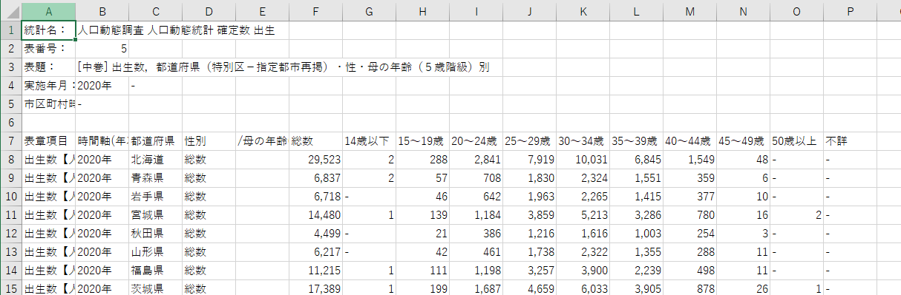

pandas で政府統計データを使ってみよう：出産年齢のデータ分析
pandas で実際の政府統計データを使用して、分析を行います。 ここでは、厚生労働省が行っている「人口動態調査」のデータを用います。 その中の、「出生数，都道府県（特別区－指定都市再掲）・性・母の年齢（５歳階級）別」という統計から母親の出産年齢の傾向を見てみます。
- 政府統計データのダウンロード
- データの読み込み
- データの前処理
- データ分析
データのダウンロード
政府統計データをダウンロードする場合、e-Stat を使うのが便利です。 e-Stat は、政府統計のデータをまとめているウェブサイトで、数年分の調査結果を一括で出力できるなど、便利な機能があります。
以下の URL から統計データをダウンロードします。
https://www.e-stat.go.jp/dbview?sid=0003411631
[!TIP] 政府統計データにどのようなものがあるかは、e-Stat や、デジタル庁が運営しているデータカタログサイトなどで調べてみましょう。
- e-Stat: https://www.e-stat.go.jp
- データカタログサイト：https://www.data.go.jp/?lang=ja
ファイル構成
データは data/raw ディレクトリに保存します。
データ名は maternal_age.csv とします。
今回作成するスクリプトは maternal_age というディレクトリ内の analysis.py というファイルに書き込むとします。
ファイル構成は次のような想定です。
.
├── data
│ └── raw
│ └── maternal_age.csv
└── src
└── maternal_age
└── analysis.py
analysis.py にやることを書いておきましょう。
# データを読み込む
# データの前処理
# データ分析
データを Python で読み込む前に、エクセルやメモ帳、VSCode などで開いてみましょう。

ここから、次のことがまず分かります。
- データは 7 行目から記載されている
- 値が 0 件の部分は欠損値
-に置き換えられている - 千単位で数値が
,で区切られている - 年数には
年の文字列が含まれている - 「都道府県（特別区－指定都市再掲）」など、列名としては使いづらいのがある
- 「 /母の年齢(5歳階級)」などの分析には不必要な列がある
データの読み込み・分析の際には、これらのことに留意する必要があります。
データ読み込み
pandas を用いてデータを読み込みます。
read_csv 関数の skiprows は何行目からをデータとして読み込むのかを指定できます。
Python では 0 から数えるので、6 を指定します。
na_values で欠損値として扱う文字列 - を追加します。
thousands で千単位の区切り文字として使用されている , を指定します。
import pandas as pd
def main():
# データを読み込む
DATA_PATH = "data/raw/maternal_age.csv"
df = pd.read_csv(DATA_PATH, skiprows=6, na_values="-", thousands=",")
print(df.head())
# データの前処理
# データ分析
if __name__ == "__main__":
main()
スクリプトを実行します。
python3 src/maternal_age/analysis.py
表章項目 時間軸(年次) 都道府県（特別区－指定都市再掲） 性別 /母の年齢(5歳階級) 総数 14歳以下 15～19歳 20～24歳 25～29歳 30～34歳 35～39歳 40～44歳 45～49歳 50歳以上 不詳
0 出生数【人】 2020年 北海道 総数 NaN 29523 2.0 288 2841 7919 10031 6845 1549 48 NaN NaN
1 出生数【人】 2020年 青森県 総数 NaN 6837 2.0 57 708 1830 2324 1551 359 6 NaN NaN
2 出生数【人】 2020年 岩手県 総数 NaN 6718 NaN 46 642 1963 2265 1415 377 10 NaN NaN
3 出生数【人】 2020年 宮城県 総数 NaN 14480 1.0 139 1184 3859 5213 3286 780 16 2.0 NaN
4 出生数【人】 2020年 秋田県 総数 NaN 4499 NaN 21 386 1216 1616 1003 254 3 NaN NaN
上手く読み込めています。
データの前処理
データは上手く読み込めましたが、このままでは欠損値が上手く処理していなかったり、列名が長すぎるものがあるなど、問題があります。 データ分析が上手くできるために、データの前処理をする必要があります。
不要な列を削除する
「 /母の年齢(5歳階級)」などは必要ないため、データから除外します。
この例では、（年齢）不詳の列もほとんど欠損値のため除外します。
列の除外には drop メソッドを使用します。
main 関数の内容を書き換えます。
def main():
# データを読み込む
DATA_PATH = "data/raw/maternal_age.csv"
df = pd.read_csv(DATA_PATH, skiprows=6)
# データの前処理
# 不要な列の削除
df = df.drop(columns=[
"表章項目",
"性別",
"/母の年齢(5歳階級)",
"不詳",
])
print(df.columns)
# データ分析
python3 src/maternal_age/analysis.py
Index(['時間軸(年次)', '都道府県（特別区－指定都市再掲）', '総数', '14歳以下', '15～19歳', '20～24歳', '25～29歳', '30～34歳', '35～39歳', '40～44歳', '45～49歳', '50歳以上'], dtype='object')
列名を変更する
都道府県の列を見るのに、「都道府県（特別区－指定都市再掲）」とタイプするのはさすがに面倒ですし、エラーの温床にもなります。
列名を英語に変更しましょう。
rename メソッドを使用します。
main 関数に以下を追加します。
# 列名の変更
df = df.rename(
columns={
"時間軸(年次)": "year",
"都道府県（特別区－指定都市再掲）": "prefecture",
"総数": "num",
"14歳以下": "age_below_14",
"15～19歳": "age_between_15_19",
"20～24歳": "age_between_20_24",
"25～29歳": "age_between_25_29",
"30～34歳": "age_between_30_34",
"35～39歳": "age_between_35_39",
"40～44歳": "age_between_40_44",
"45～49歳": "age_between_45_49",
"50歳以上": "age_over_50",
}
)
print(df.columns)
# データ分析
時間軸(年次) は半角かっこ、都道府県（特別区－指定都市再掲） では全角かっこなことに注意してください。
[!TIP] かっこが半角か全角か
columnsなどでチェックしておきましょう。
列名が変更されていることを確認します。
python3 src/maternal_age/analysis.py
Index(['year', 'prefecture', 'num', 'age_below_14', 'age_between_15_19',
'age_between_20_24', 'age_between_25_29', 'age_between_30_34',
'age_between_35_39', 'age_between_40_44', 'age_between_45_49',
'age_over_50'],
dtype='object')
欠損値の穴埋めをする
このデータでは、欠損値は 0 を意味しています。
fillna メソッドを使用します。
main 関数に以下を追加します。
# 欠損値の穴埋め
df = df.fillna(value=0)
print(df.head())
欠損値が 0 になっていることを確認します。
python3 src/maternal_age/analysis.py
year prefecture num age_below_14 age_between_15_19 age_between_20_24 age_between_25_29 age_between_30_34 age_between_35_39 age_between_40_44 age_between_45_49 age_over_50
0 2020年 北海道 29523 2.0 288 2841 7919 10031 6845 1549 48 0.0
1 2020年 青森県 6837 2.0 57 708 1830 2324 1551 359 6 0.0
2 2020年 岩手県 6718 0.0 46 642 1963 2265 1415 377 10 0.0
3 2020年 宮城県 14480 1.0 139 1184 3859 5213 3286 780 16 2.0
4 2020年 秋田県 4499 0.0 21 386 1216 1616 1003 254 3 0.0
年を整数型に変更する
2020年 という文字列は使い勝手が悪いので、2020 というように year を整数型に変更します。
年 は str アクセサの replace メソッドで削除します。
main 関数に次を追加します。
# 年を整数型に変更する
df.year = df.year.str.replace("年", "")
print(df.year.head())
年の文字が上手く削除されていることを確認します。
python3 src/maternal_age/analysis.py
0 2020
1 2020
2 2020
3 2020
4 2020
Name: year, dtype: object
ただ、dtype: object とあるように、year はまだ整数型に変換されていません。
astype メソッドでデータ型を変更します。
main 関数を修正します。
# 年を整数型に変更する
df.year = df.year.str.replace("年", "").astype(int)
print(df.year.head())
整数型に変更されたのを確認します。
python3 src/maternal_age/analysis.py
0 2020
1 2020
2 2020
3 2020
4 2020
Name: year, dtype: int64
dtype が int64 に変更されています。
高齢出産率を計算する
ここでは、高齢出産 (35 歳以上の出産) が 20 歳以上の出産数と比べて増加しているかを分析します。
列ごとに、高齢出産数・率を計算します。
複数の列を sum メソッドで合計した結果を新たな列として追加します。
main 関数に以下を追加します。
# 高齢出産数・率を計算する
df["normal_birth"] = df[
[
"age_between_20_24",
"age_between_25_29",
"age_between_30_34",
]
].sum(axis=1)
df["late_birth"] = df[
[
"age_between_35_39",
"age_between_40_44",
"age_between_45_49",
"age_over_50",
]
].sum(axis=1)
df["late_birth_rate"] = df["late_birth"] / (
df["normal_birth"] + df["late_birth"]
)
print(df.head())
行毎で足し上げるので、sum(axis=1) とすることを忘れないで下さい。
python3 src/maternal_age/analysis.py
year prefecture num age_below_14 age_between_15_19 ... age_between_45_49 age_over_50 normal_birth late_birth late_birth_rate
0 2020 北海道 29523 2.0 288 ... 48 0.0 20791 8442.0 0.288783
1 2020 青森県 6837 2.0 57 ... 6 0.0 4862 1916.0 0.282679
2 2020 岩手県 6718 0.0 46 ... 10 0.0 4870 1802.0 0.270084
3 2020 宮城県 14480 1.0 139 ... 16 2.0 10256 4084.0 0.284798
4 2020 秋田県 4499 0.0 21 ... 3 0.0 3218 1260.0 0.281376
データ分析
これで、都道府県 x 年のパネルデータを扱う準備ができました。
[!NOTE] 同じ期間内での複数の都道府県や人・企業などのデータをクロスセクションデータ、同じ都道府県や人・企業などを複数の期間で追ったものを時系列データといいます。 複数の期間で複数の都道府県や人・企業を追ったデータをパネルデータと呼びます。
ここでは、2 つの分析を行います。
- 高齢出産率の年別平均の計算
- 高齢出産率の都道府県ランクの計算
その前に、記述統計量を確認しましょう。
記述統計
describe メソッドで記述統計量を計算します。
main 関数に以下を追加します。
# 記述統計
print(df["late_birth_rate"].describe())
python3 src/maternal_age/analysis.py
count 282.000000
mean 0.272821
std 0.023943
min 0.227689
25% 0.256795
50% 0.269063
75% 0.283513
max 0.374096
Name: late_birth_rate, dtype: float64
高齢出産率は 5 年間、47 都道府県のデータにおいて、高齢出産率は平均して 約 27.2% と少なくない数であることがわかります。 また、75% のパーセンタイルは 28.3% であることに比べ、最大値は 37.47% と 10パーセンテージ近く高いことも分かります。
高齢出産率の年別平均
高齢出産率が年が上がるごとに増えつつあるのか、確認してみます。
年別の平均値を計算します。
groupby メソッドを用いて、DataFrame を年別でまとめます。
mean メソッドで平均を計算し、late_birth_rate のみの結果を取り出します。
main 関数に以下を追加します。
# 年別平均
mean_by_year = df.groupby('year').mean()["late_birth_rate"]
print(mean_by_year)
[!TIP]
late_birth_rateのみを呼び出した後にmeanメソッドで平均を計算することもできます。 つまり、df.groupby('year')["late_birth_rate"].mean()でも可能です。
python3 src/maternal_age/analysis.py
~~~
year
2015 0.264842
2016 0.269567
2017 0.271851
2018 0.273072
2019 0.277304
2020 0.280291
Name: late_birth_rate, dtype: float64
2015 年から 2020 年にかけて少しずつ高齢出産率が上昇していることが分かります。
高齢出産率の都道府県ランク
5 年間の平均の高齢出産率はどの都道府県が高いのかを順位付けしてみます。
都道府県別の 5 年間の平均は先ほどと同じように groupby メソッドを用いて都道府県別にまとめ、mean メソッドで平均を計算し、late_birth_rate のみを取り出します。
順位の列をつけたいため、late_birth_rate の結果を Series ではなく DataFrame として取り出します。
[!NOTE]
df[late_birth_rate]はSeries、df[[late_birth_rate]]はDataFrameが返ってきます。 また、df[late_birth_rate].to_frame()でSeriesをDataFrameに変換することも可能です。
順位付けには、rank メソッドを用います。
ここでは、ascending=False にして、高い順から並べます。
結果を prefecture_rank 列として追加します。
また、出力が見やすいように sort_values メソッドで値を並び変えます。
by でどの列の値を元に並び変えるのかを指定します。
ここでは、prefecture_rank で値を並び変えます。
順位が高い 5 つと順位が低い 5 つのみを取り出します。
main 関数に以下を追加します。
# 都道府県ランク
mean_by_prefecture = df.groupby("prefecture")[["late_birth_rate"]].mean()
mean_by_prefecture["prefecture_rank"] = mean_by_prefecture.rank(
ascending=False
)
mean_by_prefecture = mean_by_prefecture.sort_values(by="prefecture_rank")
print("\ntop 5")
print(mean_by_prefecture.head())
print("\nbottom 5")
print(mean_by_prefecture.tail())
python3 src/maternal_age/analysis.py
~~~
top 5
late_birth_rate prefecture_rank
prefecture
東京都 0.369605 1.0
神奈川県 0.328828 2.0
京都府 0.312285 3.0
千葉県 0.299364 4.0
埼玉県 0.296015 5.0
bottom 5
late_birth_rate prefecture_rank
prefecture
宮崎県 0.250071 43.0
佐賀県 0.249329 44.0
和歌山県 0.248906 45.0
山口県 0.247753 46.0
福島県 0.236949 47.0
高齢出産率が最も高いのは東京都、その次に神奈川県であることがわかりました。 逆に、最も低いのは福島県、その次に山口県です。 ここから、人口密度との関連などが仮説として考えられそうです。